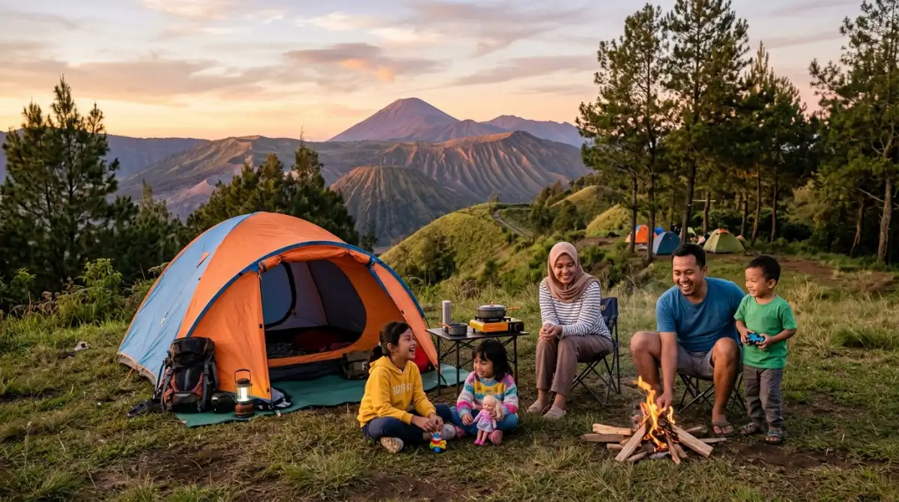

Rekomendasi tempat camping ramah anak di kawasan Malang dan Batu yang aman untuk balita.
Rekomendasi tempat camping ramah anak di kawasan Malang dan Batu yang aman untuk balita.
Pernahkah kamu membayangkan liburan akhir pekan yang tenang bersama keluarga, tapi realitanya malah berantakan karena anak tantrum di tempat perkemahan? Aku tahu rasanya. Setelah seminggu penuh bergelut dengan tumpukan deadline dan rentetan meeting di kantor, kamu pasti ingin memberikan pengalaman alam yang berharga untuk si kecil.
Namun, salah memilih lokasi kemah bisa mengubah niat healing menjadi pusing tujuh keliling. Jangan sampai momen berharga ini berlalu dengan kenangan anak yang masuk angin atau menangis semalaman karena fasilitas yang tidak memadai dan akses yang menyulitkan.
Menghindari penyesalan semacam ini sebenarnya sangat mudah jika kamu tahu kriteria yang tepat sejak awal. Lewat artikel ini, aku akan membantumu menemukan rekomendasi tempat camping kids friendly di area Malang dan Batu yang dijamin aman untuk balita, sehingga kamu bisa pulang dengan pikiran segar dan memori manis, bukan rasa kapok.
Kriteria Tempat Camping Kids Friendly yang Wajib Ada
Membawa balita atau anak kecil ke alam bebas itu mirip dengan menangani proyek besar dengan klien VIP di kantor; kamu butuh contingency plan (rencana cadangan) dan tidak bisa bertaruh pada hal-hal yang tidak pasti. Kamu tidak bisa sekadar memilih lahan kosong berumput lalu mendirikan tenda.
Untuk memastikan kenyamanan standar keluarga, sebuah tempat camping kids friendly harus memenuhi beberapa Key Performance Indicator (KPI) kelayakan dasar:
- Akses Kendaraan Langsung ke Lokasi: Lupakan soal trekking jauh mendaki bukit sambil menggendong balita dan menenteng tas perlengkapan yang beratnya menyaingi beban hidup. Tempat kemah yang ideal untuk keluarga harus bisa diakses mobil langsung hingga ke titik mendirikan tenda (campervan style) atau setidaknya lahan parkir yang jaraknya hanya beberapa puluh meter dari campground.
- Ketersediaan Air Hangat dan Toilet Bersih: Ini adalah harga mati. Balita sangat sensitif terhadap suhu dingin ekstrem khas pegunungan. Ketersediaan toilet duduk yang bersih dan instalasi air hangat (water heater) akan menyelamatkanmu dari drama anak yang menolak mandi. Bayangkan fasilitas ini seperti pantry dan toilet eksekutif di kantormu; tanpanya, produktivitas (baca: mood liburan) pasti hancur.
- Keamanan 24 Jam dan Instalasi Listrik: Anak kecil suka bereksplorasi. Lahan perkemahan harus memiliki batas yang jelas, penjagaan keamanan, dan penerangan yang cukup saat malam hari. Adanya colokan listrik di dekat tenda juga krusial untuk memasang alat pemanas air portabel atau mengisi daya gawai.
7 Rekomendasi Tempat Camping Kids Friendly di Malang dan Batu
Berbekal prinsip kualitas, otoritas, kepercayaan, dan pengalaman (QATEX), aku telah mengurasi daftar lokasi kemah di sekitar kawasan dingin Malang Raya yang sudah terbukti ramah untuk ekosistem keluarga.
1. Batu Sunrise Camp (Rekomendasi Utama)
Jika kamu mencari keseimbangan antara nuansa alam liar yang otentik dan kenyamanan fasilitas, Batu Sunrise Camp adalah kandidat terkuat. Berdasarkan berbagai dokumentasi dan ulasan nyata dari banyak keluarga muda yang pernah menginap di sini, tempat ini memiliki tata kelola yang sangat profesional.
Fasilitas toilet yang bersih dan penjagaan dari tim yang sigap 24 jam membuat orang tua merasa aman melepas anak-anak bermain di area rumput. Yang membuat tempat ini menonjol secara E-E-A-T (Experience, Expertise, Authoritativeness, Trustworthiness) adalah keahlian staf lapangan mereka dalam membantu keluarga pemula—mulai dari mendirikan tenda, menyediakan kayu bakar yang aman, hingga memberikan panduan arah angin.
Area parkirnya pun sangat dekat dengan lokasi kemah. Melihat senyum balita yang berlarian tanpa hambatan di sini adalah bukti valid bahwa alam bisa dinikmati dengan cara yang sangat beradab.
2. Campervan Park Kusuma Agrowisata
Mengusung konsep campervan, lokasi yang berada di dalam area Kusuma Agrowisata Batu ini ibarat memiliki ruang kerja hybrid. Kamu mendapatkan pemandangan gunung dan city light kota Batu yang luar biasa, namun mobilmu bisa parkir persis di sebelah tenda.
Jika di tengah malam si kecil butuh kehangatan ekstra atau kamu butuh mengambil susu dan popok, kamu tinggal membuka pintu mobil. Fasilitas toilet umum, air bersih, dan listriknya sangat memadai, sangat cocok untuk keluarga yang baru pertama kali mencoba camping.

Momen keluarga menikmati suasana camping yang nyaman dan aman di kawasan Malang Raya.3. Bobocabin Coban Rondo
Buat kamu yang ingin mengenalkan alam pada anak tapi menolak keras untuk repot loading barang layaknya pindahan rumah, Bobocabin adalah solusinya. Ini adalah bentuk evolusi glamping (glamorous camping). Berada di tengah hutan pinus Coban Rondo yang rimbun, kamu sekeluarga akan tidur di dalam kabin estetik bermaterial kayu dengan jendela kaca raksasa.
Fasilitas di dalamnya sudah setara hotel bintang empat: kasur empuk, AC, smart window, hingga kamar mandi dalam dengan water heater. Anak-anak bisa menikmati marshmallow di area api unggun komunal yang dikelola sangat aman oleh staf.
4. Lembah Indah Malang
Terletak di lereng Gunung Kawi, Lembah Indah menawarkan hamparan lembah hijau yang ditata sedemikian rupa hingga menyerupai perbukitan di luar negeri. Opsi glamping berbentuk dome putih di sini sangat digemari keluarga.
Tempat ini sangat kids friendly karena kontur tanahnya berundak tapi aman, serta dilengkapi dengan peternakan sapi dan kebun sayur edukatif. Anak-anak bisa belajar memberi makan hewan, sebuah aktivitas motorik yang jauh lebih menyenangkan daripada sekadar bermain gadget di akhir pekan.
5. Oak Tree Glamping Resort
Bergeser sedikit ke area kota Batu, Oak Tree menawarkan nuansa perkemahan mewah yang menyatu dengan unsur resor. Tenda-tenda glamping di sini memiliki dek kayu yang luas, memungkinkan anak-anak duduk santai di teras tanpa harus menyentuh tanah yang basah oleh embun.
Ini adalah pilihan paling 'aman' jika kamu memiliki balita yang baru belajar berjalan. Seperti halnya vendor premium yang mengurus semua kebutuhan acaramu, Oak Tree memastikan sarapan, kebersihan, dan kenyamanan tidur tersaji dengan standar tinggi.
6. Coban Talun (Pagupon & Apache Camp)
Coban Talun tidak hanya menawarkan air terjun, tapi juga beberapa klaster perkemahan tematik. Pagupon Camp dengan tenda berbentuk sangkar burung merpati, atau Apache Camp yang berbentuk tenda suku Indian, menawarkan daya tarik visual yang akan membuat anak-anak terpukau.
Meski lebih bernuansa outdoor dibandingkan Bobocabin atau Oak Tree, pengelola kawasan ini sudah menyiapkan akses jalan setapak yang mulus dan toilet permanen yang tersebar di berbagai titik, sehingga mobilitas bersama balita tetap nyaman.
7. Shanaya Resort Malang
Bagi keluarga yang mencari perpaduan antara nuansa hutan dan kemewahan kolam renang, Shanaya Resort di area Karangploso bisa jadi pilihan penutup. Mereka memiliki area perkemahan kayu yang sangat elegan.
Anak-anak bisa merasakan tidur di tengah rimbunnya pohon besar, namun di siang hari mereka bisa berenang di fasilitas resor. Ini adalah transisi yang sempurna sebelum mengajak mereka camping di alam yang lebih liar.
Menyiapkan Mental dan Logistik Sebelum Berangkat
Meskipun tempat camping kids friendly di atas sudah menyediakan fasilitas penunjang yang mumpuni, kamu tetap bertindak sebagai 'Project Manager' untuk keluargamu. Alam tetaplah alam. Suhu udara di Batu dan Malang bisa turun drastis menyentuh angka 15 derajat Celcius saat dini hari.
Persiapkan pakaian berlapis (layering) untuk anak: kaus dalam penyerap keringat, sweter hangat, dan jaket penahan angin. Jangan lupa membawa kotak P3K berisi obat penurun panas, plester, dan losion antinyamuk. Anggap saja kotak P3K ini sebagai asuransi proyekmu; lebih baik dibawa tapi tidak terpakai, daripada butuh tapi tidak ada.
Saatnya Menciptakan Memori, Bukan Penyesalan
Mengenalkan anak pada alam bebas adalah sebuah investasi memori jangka panjang. Kamu mengajarkan mereka tentang udara segar, suara jangkrik, dan hangatnya api unggun—hal-hal sederhana yang perlahan terkikis oleh hiruk-pikuk kehidupan modern. Jangan biarkan ketakutan akan kerepotan mengurungkan niatmu.
Dengan memilih fasilitas yang tepat dan terukur, kamu sudah mengeliminasi 80% potensi masalah. Lakukan reservasi jauh-jauh hari, susun barang bawaan dengan cermat, dan persiapkan dirimu untuk akhir pekan yang benar-benar mendekatkan hubungan keluarga.
Waktu terus berjalan, dan anak-anak tumbuh dengan sangat cepat. Jangan sampai kamu menyesal di kemudian hari karena melewatkan fase emas mereka hanya karena ragu memulai langkah kecil untuk berpetualang.
FAQ (Pertanyaan yang Sering Diajukan)